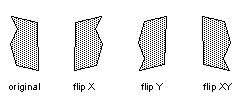
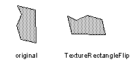
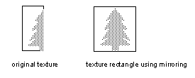
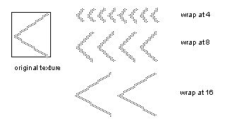
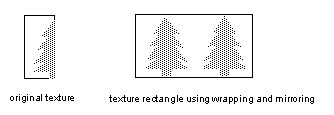
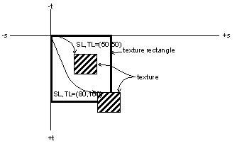
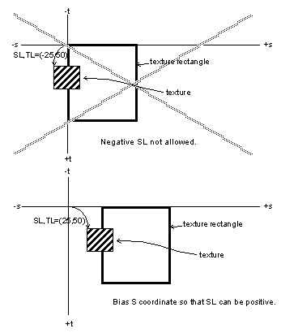
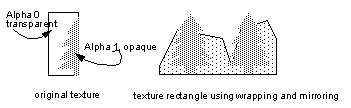

|
|
Simple Texture Effects
This section describes some ‘sprite’-type effects that are commonly useful for texture rectangles. This is intended to be a starting point for programmers, not a complete list. Undoubtedly, clever programmers will find the hardware allows many other effects.
Flip
Figure 14.2.1 Flipping Texture Rectangles
If the texture map to be flipped has a size that is a power of two in the direction of the flip, then you can use the mirror_enable (see Section 13.4.6, “Mirror Enable S,T”) bit in the tile descriptor to perform the flip. For example, suppose we have loaded a 32x32 16-bit RGBA texture into Tmem. To flip the texture in X we can use the code in Example 14-11.
Example 14-11 Flip a Texture in X
Flip means to rotate an image 180 degrees around the X or Y axis or both as shown in Figure 14.2.1.
 gsDPSetTile(G_IM_FMT_RGBA, G_IM_SIZ_16b, 8, 0,
G_TX_RENDERTILE,0,
G_TX_MIRROR, 5, G_TX_NOLOD, /* s */
G_TX_NOMIRROR, 5, G_TX_NOLOD), /* t */
gsSPTextureRectangle(50 << 2, 50 << 2, 150 << 2, 150 << 2,
G_TX_RENDERTILE,
32 << 5, 0, /* start s on mirror boundary */
1 << 10, 1 << 10),
Note that the S start point is 32. Since the texture will be mirrored when the S coordinate is between 32 and 63 if the mirror enable bit in the tile is set, we get the effect of a flipped texture. If the mirror bit is disabled, the texture will remain unflipped.
For textures that are not power of two sizes, we must use another approach for flipping the textures. Suppose we have loaded a 48x42 16-bit RGBA texture in Tmem and would like to flip the texture in T. The code in Example 14-12 would accomplish this.
Example 14-12 Flip a Texture in Y (non power-of-two size)
gsSPTextureRectangle(50 << 2, 50 << 2, 98 << 2, 92 << 2, G_TX_RENDERTILE, 0, 41 << 5, /* start t at bottom of texture */ 1 << 10, ((-1) << 10)&0xffff), /* step from bottom to top of texture*/
Note that we change the texture T coordinate to start at the bottom of the texture and change the increment in T so that we step from the bottom of the texture to the top, thus flipping the texture in Y. There is also a variation of the texture rectangle called g*DPTextureRectangleFlip() that swaps the S and T coordinates in hardware. If we had a display list as in Example 14-13
Example 14-13 TextureRectangleFlip command
gsSPTextureRectangleFlip(50 << 2, 50 << 2, 98 << 2, 92 << 2, G_TX_RENDERTILE, 0, 0, 1 << 10, 1 << 10)
we would get an resulting image as shown in Figure 14.2.2.
Figure 14.2.2 TextureRectangleFlip Command
|  |
Mirror
Mirroring is also useful for data compression in cases where the texture has axial symmetry. For example, a tree could be created with half of a tree texture that was mirrored in X as shown in Figure 14.2.3.
Figure 14.2.3 Mirrored Tree
|  |
As mentioned before, to use hardware mirroring, the texture must be a power of two size in the direction to be mirrored. Suppose the tree texture above is a 16x40 16-bit RGBA texture. Example 14-14 will render the mirrored tree as shown in Figure 14.2.3.
Example 14-14 Mirrored Tree
gsDPLoadTextureTile(tree, G_IM_FMT_RGBA, G_IM_SIZ_16b, 16, 40, 0, 0, 15, 39, 0, G_TX_MIRROR, G_TX_CLAMP, 4, G_TX_NOMASK, G_TX_NOLOD, G_TX_NOLOD), gsSPTextureRectangle(50 << 2, 50 << 2, 82 << 2, 90 << 2, G_TX_RENDERTILE, 0, 0, 1 << 10, 1 << 10),
Wrap
Wrapping allows a small texture to fill a larger rectangle by repeating the texture over and over. In the Nintendo 64, wrapping is enabled if the mask (see “Section 13.4.7, Mask S,T” ) in the tile descriptor is non-zero and the clamp bit (see Section 13.4.11, “Clamp S,T” ) in the tile descriptor is not set for the coordinate in question. The mask determines which power of two the wrap occurs on. Figure 14.2.4 shows the results for various wrap boundaries using a single texture.
Figure 14.2.4 Wrapping on Several Boundaries of the Same Texture
|  |
Wrapping can also be used in conjunction with mirroring. Suppose we wanted to wrap the mirrored tree shown in Figure 14.2.3 above. This could be done using the code in Example 14-15.
Example 14-15 Wrapped and Mirrored Tree
gsDPLoadTextureTile(tree, G_IM_FMT_RGBA, G_IM_SIZ_16b, 16, 40, 0, 0, 15, 39, 0, G_TX_MIRROR | G_TX_WRAP, G_TX_CLAMP, 4, G_TX_NOMASK, G_TX_NOLOD, G_TX_NOLOD), gsSPTextureRectangle(50 << 2, 50 << 2, 114 << 2, 90 << 2, G_TX_RENDERTILE, 0, 0, 1 << 10, 1 << 10),
Note that the G_TX_WRAP above is really unnecessary because wrapping is implicit as we have a non-zero mask value and are not clamping. It is included just for documentation purposes. The resulting image would look like Figure 14.2.5.
Figure 14.2.5 Wrapped and Mirrored Tree
|  |
Sliding Textures
It is easy to slide a texture relative to the rectangle primitive by the changing the tile descriptor values of SL and TL (see Section 13.4.9, “SL,TL”). Using the tile descriptor allows the texture coordinates to be statically defined. The effect of changing SL, TL is shown in
Figure 14.2.6.
Figure 14.2.6 Effect of Changing SL, TL
|  |
Suppose we have a 32x32 4-bit I texture loaded in Tmem. In Example 14-16, two rectangles are rendered with the texture placed in different positions using SL and TL.
Example 14-16 Sliding Texture Using SL, TL
gsDPSetTileSize(G_TX_RENDERTILE, 50, 50, 82, 82), gsSPTextureRectangle(50 << 2, 50 << 2, 82 << 2, 82 << 2, G_TX_RENDERTILE, 0, 0, 1 << 10, 1 << 10), gsDPSetTileSize(G_TX_RENDERTILE, 80, 100, 112, 132), gsSPTextureRectangle(100 << 2, 100 << 2, 132 << 2, 132 << 2, G_TX_RENDERTILE, 0, 0, 1 << 10, 1 << 10),
Note that SH and TH are only used when clamping. Because SL and TL are unsigned, the texture rectangle coordinates must be offset to allow sliding above the top edge or to the left of the left edge of the rectangle. This is shown in Figure 14.2.7 and Example 14-17.
Figure 14.2.7 Biasing Texture Coordinates for Positive SL, TL
|  |
Example 14-17 Biased Coordinates for Positive SL
gsDPSetTileSize(G_TX_RENDERTILE, 25, 50, 57, 82), gsSPTextureRectangle(50 << 2, 50 << 2, 82 << 2, 82 << 2, G_TX_RENDERTILE, 50 << 5, 0, 1 << 10, 1 << 10),
Smooth Scrolling
Scrolling involves positioning texture rectangles on the screen and also positioning the texture within the rectangle. The rectangle geometry can be positioned with 2 bits of fractional precision in X and Y. The texture coordinates can be specified with 5 bits of fractional precision in S and T. To get the smoothest scrolling, you can use the S and T start point as the fractional part and the rectangle’s X and Y position for the integer part. So effectively, you are sliding the texture to achieve fractional displacements. Example 14-18 shows how such positioning could be achieved. Keep in mind that a border area around the texture must be present so that the texture doesn’t clamp when it slides off the rectangle.
Example 14-18 Accurate Positioning Using S and T
float xpos = 10.375, ypos = 19.432; int xi, xf, yi, yf; xi = (int) xpos; yi = (int) ypos; xf = 32 - 32 * (xpos - xi); yf = 32 - 32 * (ypos - yi); gDPTextureRectangle(glistp++, xi << 2, yi << 2, (xi+32) << 2, (yi+32) << 2, G_TX_RENDERTILE, xf, yf, 1 << 10, 1 << 10);
Billboards
Billboards are textures that define complex outlines by using texture transparency. For example, rather than creating a tree using polygons, you can use an image of a tree, with the portion of the image outside the tree having an alpha of 0 (transparent) and the interior of the tree having an alpha of 1 (opaque). This is shown graphically in Figure 14.2.8. This technique allows complex scenes to be built by compositing simple images together.
Figure 14.2.8 Texture Billboard
|  |
It is important to consider the antialiasing of the edges created by the texture’s alpha pattern. If only 1 bit of alpha is used, then the pixel is either written or not. If more bits of alpha are used to create a smoother transition from opaque to transparent the edges will be blended with the background. Billboards should be rendered after all opaque background objects have been rendered. There are several texel formats that allow multiple bits of alpha (see Section 14.6, “Color Index Frame Buffer”) and ways of combining different types (see Section 14.3.5, “Combining Types”). To render this type of antialiased texture billboard, you must be in one or two cycle mode and you should use the render mode G_RM_AA_TEX_EDGE. Please see Section 15.5.4, “Texture Edge Mode, TEX_EDGE” for further details.
Texture billboards can also be rendered in a write-only fashion but this also implies no antialiasing of the texture edge. This mode is called ‘alpha compare’ and basically thresholds the texel alpha with a register alpha value or a random alpha source to generate a write enable for the pixel. Please see Section 15.5.4, “Alpha Compare Calculation” for further details.
Cloud (CLD) Render Mode
Cloud render mode is intended for rendering texture billboards that are not opaque, i.e. smoke clouds, explosions, etc. These are special cases because care must be taken not to disturb the antialiased edges of things behind the transparent cloud, because these edges will be seen through the cloud.
|
Copyright © 1999 Nintendo of America Inc. All Rights Reserved Nintendo and N64 are registered trademarks of Nintendo Last Updated January, 1999 |